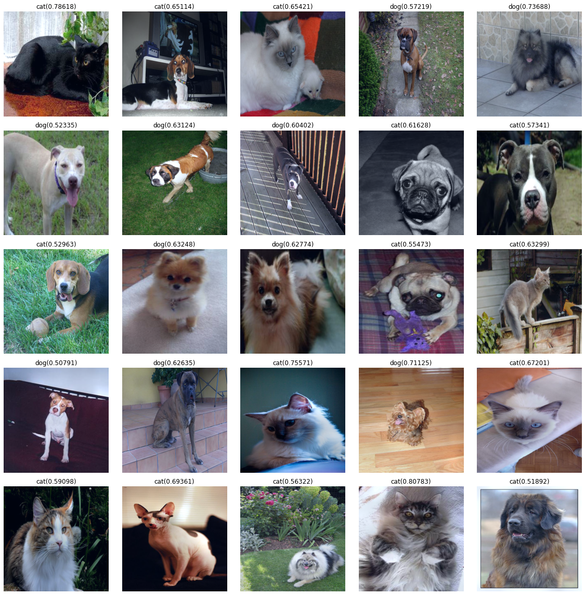
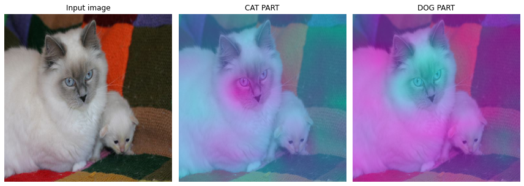
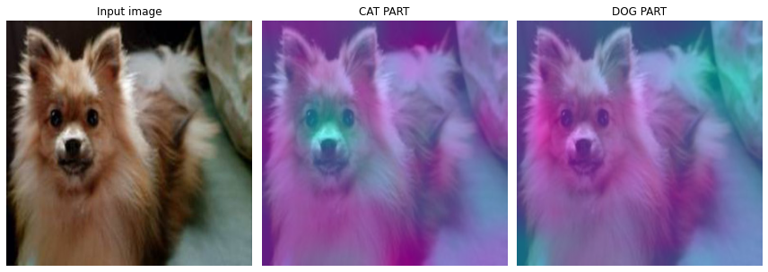

import torch
from fastai.vision.all import *
import cv2
import numpy as np
import os
os.environ['CUDA_LAUNCH_BLOCKING'] = "1"
os.environ["CUDA_VISIBLE_DEVICES"] = "0"
import cv2
import numpy as np
import matplotlib.pyplot as plt
from PIL import ImageDraw
from PIL import ImageFont
from PIL import ImageFile
from PIL import Image
ImageFile.LOAD_TRUNCATED_IMAGES = True
from torchvision.utils import save_image
import osOriginal CAM
CAM
https://seoyeonc.github.io/chch/cnn/feature%20extraction/big%20data%20analysis/2022/01/11/bd_9주차.html
https://seoyeonc.github.io/chch/cam/2022/01/10/bd-8주차_1.html
import
import rpy2
import rpy2.robjects as ro
from rpy2.robjects.vectors import FloatVector
from rpy2.robjects.packages import importrdef label_func(f):
if f[0].isupper():
return 'cat'
else:
return 'dog' 학습
path=Path('random_pet_one') #랜덤박스넣은사진files=get_image_files(path)dls=ImageDataLoaders.from_name_func(path,files,label_func,item_tfms=Resize(512)) lrnr=cnn_learner(dls,resnet34,metrics=error_rate)
lrnr.fine_tune(1)
0.00% [0/1 00:00<?]
| epoch | train_loss | valid_loss | error_rate | time |
|---|
26.09% [24/92 07:06<20:09 0.6581]
net1=lrnr.model[0]
net2=lrnr.model[1] net2 = torch.nn.Sequential(
torch.nn.AdaptiveAvgPool2d(output_size=1),
torch.nn.Flatten(),
torch.nn.Linear(512,out_features=2,bias=False))net=torch.nn.Sequential(net1,net2)fig, ax = plt.subplots(5,5)
k=0
for i in range(5):
for j in range(5):
x, = first(dls.test_dl([PILImage.create(get_image_files(path)[k])]))
camimg = torch.einsum('ij,jkl -> ikl', net2[2].weight, net1(x).squeeze())
a,b = net(x).tolist()[0]
catprob, dogprob = np.exp(a)/ (np.exp(a)+np.exp(b)) , np.exp(b)/ (np.exp(a)+np.exp(b))
if catprob>dogprob:
test=camimg[0]-torch.min(camimg[0])
A1=torch.exp(-0.1*test)
X1=np.array(A1.to("cpu").detach(),dtype=np.float32)
Y1=torch.Tensor(cv2.resize(X1,(512,512),interpolation=cv2.INTER_LINEAR))
x1=x.squeeze().to('cpu')*Y1-torch.min(x.squeeze().to('cpu'))*Y1
(x1*0.25).squeeze().show(ax=ax[i][j])
ax[i][j].set_title("cat(%s)" % catprob.round(5))
else:
test=camimg[1]-torch.min(camimg[1])
A1=torch.exp(-0.1*test)
X1=np.array(A1.to("cpu").detach(),dtype=np.float32)
Y1=torch.Tensor(cv2.resize(X1,(512,512),interpolation=cv2.INTER_LINEAR))
x1=x.squeeze().to('cpu')*Y1-torch.min(x.squeeze().to('cpu'))*Y1
(x1*0.25).squeeze().show(ax=ax[i][j])
ax[i][j].set_title("dog(%s)" % dogprob.round(5))
k=k+1
fig.set_figwidth(16)
fig.set_figheight(16)
fig.tight_layout()Clipping input data to the valid range for imshow with RGB data ([0..1] for floats or [0..255] for integers).
Clipping input data to the valid range for imshow with RGB data ([0..1] for floats or [0..255] for integers).
Clipping input data to the valid range for imshow with RGB data ([0..1] for floats or [0..255] for integers).
Clipping input data to the valid range for imshow with RGB data ([0..1] for floats or [0..255] for integers).
Clipping input data to the valid range for imshow with RGB data ([0..1] for floats or [0..255] for integers).
Clipping input data to the valid range for imshow with RGB data ([0..1] for floats or [0..255] for integers).
Clipping input data to the valid range for imshow with RGB data ([0..1] for floats or [0..255] for integers).
Clipping input data to the valid range for imshow with RGB data ([0..1] for floats or [0..255] for integers).
Clipping input data to the valid range for imshow with RGB data ([0..1] for floats or [0..255] for integers).
Clipping input data to the valid range for imshow with RGB data ([0..1] for floats or [0..255] for integers).
Clipping input data to the valid range for imshow with RGB data ([0..1] for floats or [0..255] for integers).
Clipping input data to the valid range for imshow with RGB data ([0..1] for floats or [0..255] for integers).
Clipping input data to the valid range for imshow with RGB data ([0..1] for floats or [0..255] for integers).
Clipping input data to the valid range for imshow with RGB data ([0..1] for floats or [0..255] for integers).
Clipping input data to the valid range for imshow with RGB data ([0..1] for floats or [0..255] for integers).
Clipping input data to the valid range for imshow with RGB data ([0..1] for floats or [0..255] for integers).
Clipping input data to the valid range for imshow with RGB data ([0..1] for floats or [0..255] for integers).
CAT
x, = first(dls.test_dl([PILImage.create(get_image_files(path)[2])]))camimg = torch.einsum('ij,jkl -> ikl', net2[2].weight, net1(x).squeeze())fig, (ax1,ax2,ax3) = plt.subplots(1,3)
#
dls.train.decode((x,))[0].squeeze().show(ax=ax1)
ax1.set_title("Input image")
#
dls.train.decode((x,))[0].squeeze().show(ax=ax2)
ax2.imshow((camimg[0]).to("cpu").detach(),alpha=0.5,extent=(0,511,511,0),interpolation='bilinear',cmap='cool')
ax2.set_title("CAT PART")
#
dls.train.decode((x,))[0].squeeze().show(ax=ax3)
ax3.imshow((camimg[1]).to("cpu").detach(),alpha=0.5,extent=(0,511,511,0),interpolation='bilinear',cmap='cool')
ax3.set_title("DOG PART")
#
fig.set_figwidth(12)
fig.set_figheight(12)
fig.tight_layout()
- 판단 근거가 강할 수록 파란색 -> 보라색
a,b = net(x).tolist()[0]np.exp(a)/ (np.exp(a)+np.exp(b)) , np.exp(b)/ (np.exp(a)+np.exp(b))(0.6542138518015758, 0.3457861481984243)DOG
x, = first(dls.test_dl([PILImage.create(get_image_files(path)[12])]))camimg = torch.einsum('ij,jkl -> ikl', net2[2].weight, net1(x).squeeze())fig, (ax1,ax2,ax3) = plt.subplots(1,3)
#
dls.train.decode((x,))[0].squeeze().show(ax=ax1)
ax1.set_title("Input image")
#
dls.train.decode((x,))[0].squeeze().show(ax=ax2)
ax2.imshow((camimg[0]).to("cpu").detach(),alpha=0.5,extent=(0,511,511,0),interpolation='bilinear',cmap='cool')
ax2.set_title("CAT PART")
#
dls.train.decode((x,))[0].squeeze().show(ax=ax3)
ax3.imshow((camimg[1]).to("cpu").detach(),alpha=0.5,extent=(0,511,511,0),interpolation='bilinear',cmap='cool')
ax3.set_title("DOG PART")
#
fig.set_figwidth(12)
fig.set_figheight(12)
fig.tight_layout()
- 판단 근거가 강할 수록 파란색 -> 보라색
a,b = net(x).tolist()[0]np.exp(a)/ (np.exp(a)+np.exp(b)) , np.exp(b)/ (np.exp(a)+np.exp(b))(0.37226164291160574, 0.6277383570883942)